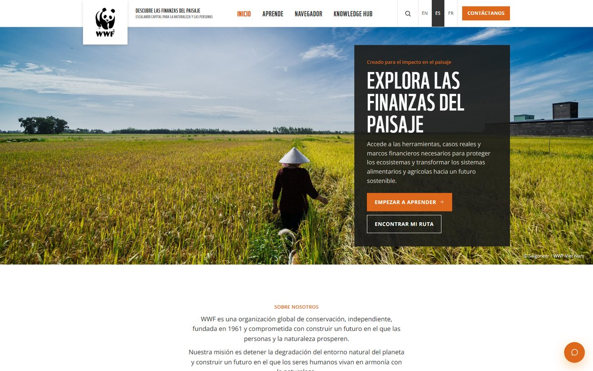
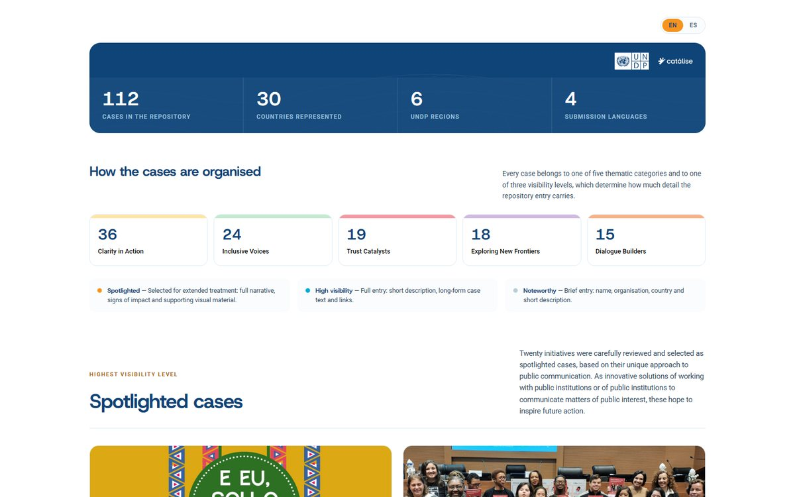
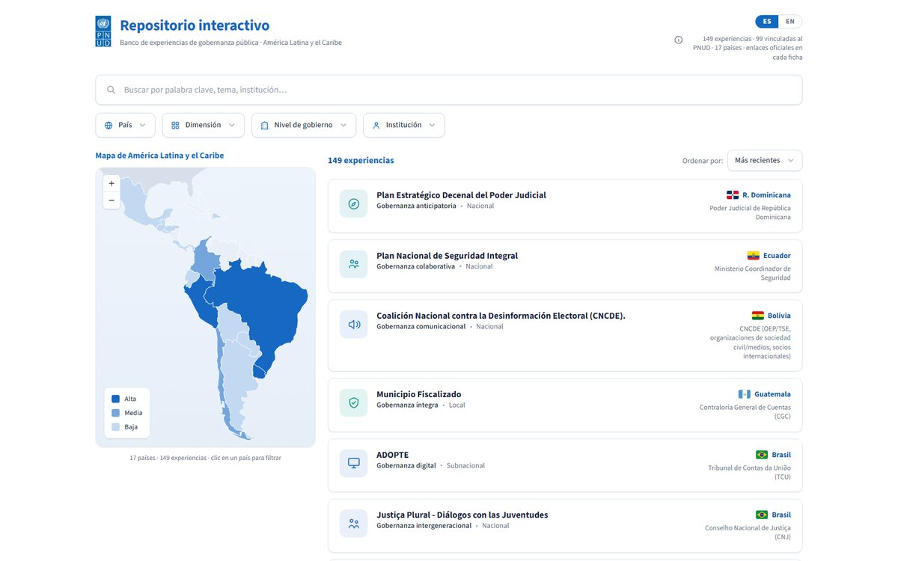
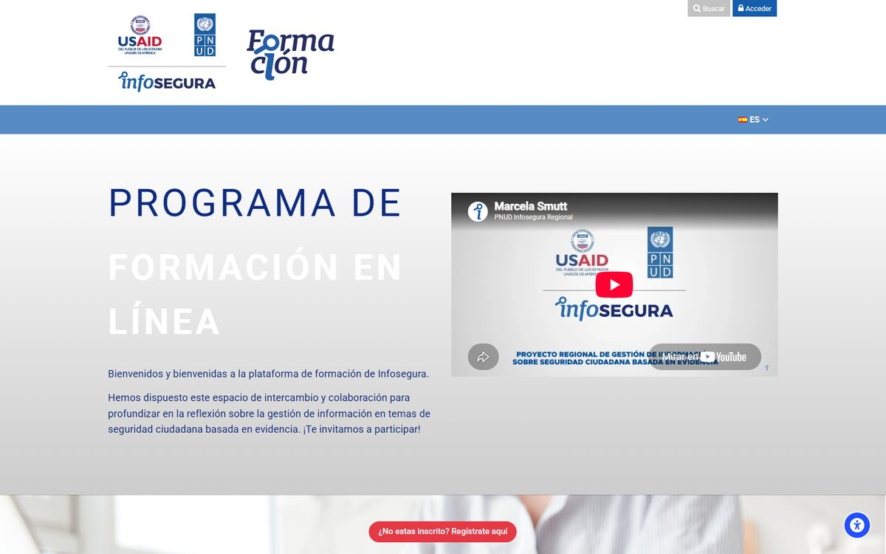
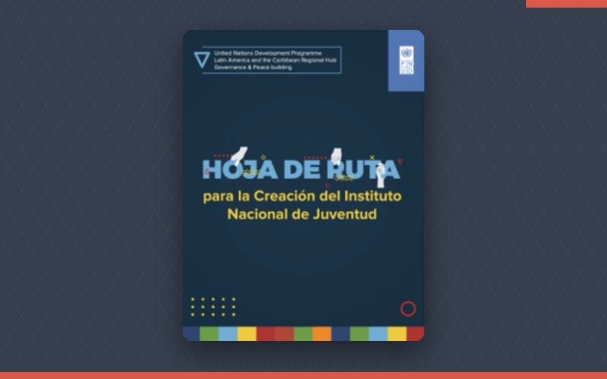
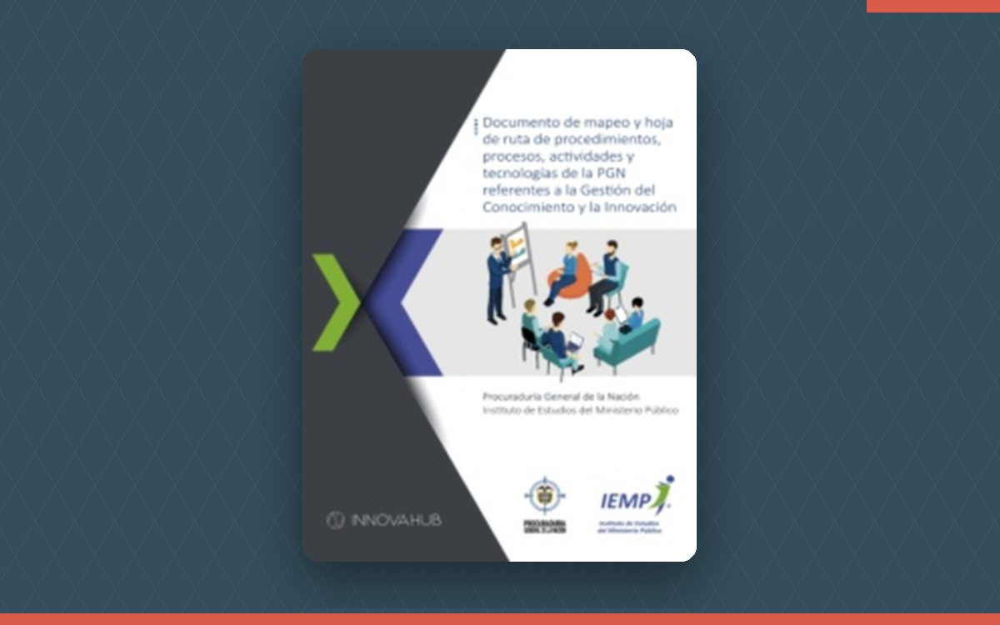
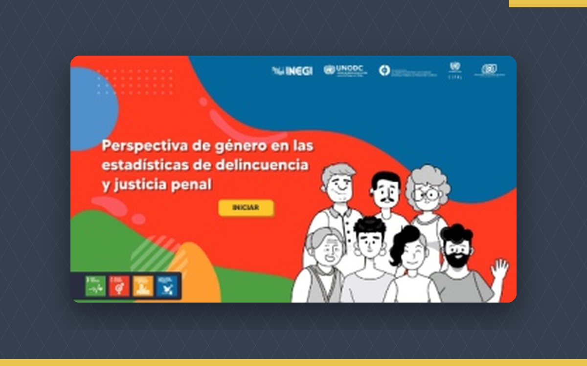
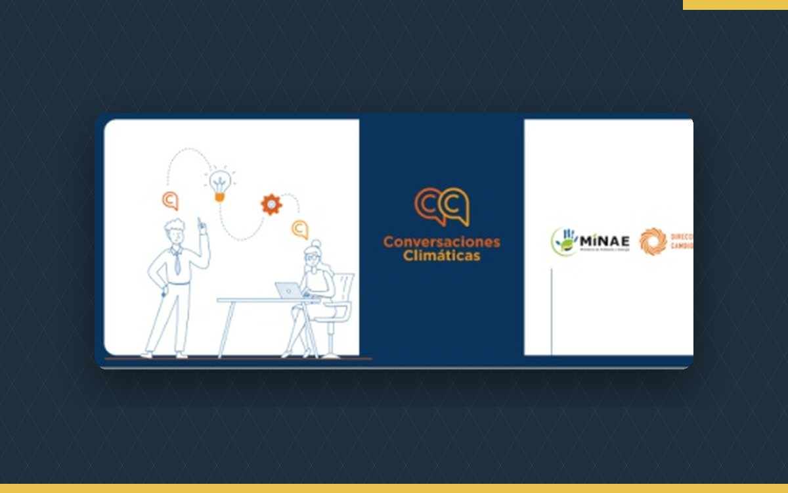
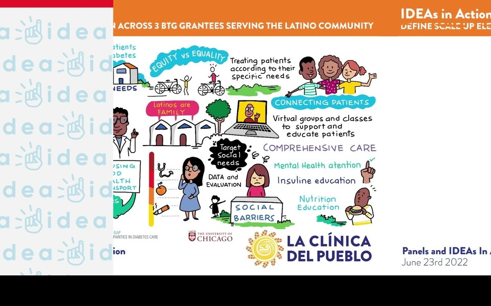

Casos de éxito
Proyectos con organismos de cooperación, entidades públicas, fundaciones y ONG en 13 países de América y África.

Ciclo de Formación en Género e Interseccionalidad
14 cursos, 400 horas y 3 niveles con plugin Moodle de rutas y autodiagnóstico.
Ver caso
Sustainable Finance for Conservation
Sitio trilingüe con navegador de financiamiento y mapa de casos.
Ver caso
Atlas of Innovation in Public Communication
112 casos de 30 países, bilingüe, con mapa y filtros embebibles en Drupal.
Ver caso
Banco de experiencias de gobernanza pública
Dashboard de 149 experiencias por dimensión y país, con informe imprimible.
Ver caso
Campus virtual Infosegura
Campus para la gestión del conocimiento en seguridad ciudadana.
Ver caso
Hoja de ruta del Instituto Nacional de Juventud
Ruta de creación institucional con inteligencia colectiva.
Ver caso
Mapeo de procesos y hoja de ruta en gestión del conocimiento
Procedimientos, actividades y tecnologías de la PGN para la gestión del conocimiento y la innovación.
Ver caso
Toma de decisiones con apoyo para personas con discapacidad
OVA en Storyline acompañada de video documental y podcast.
Ver caso
Perspectiva de género en las estadísticas de delincuencia y justicia penal
Línea gráfica y objeto virtual de aprendizaje en Storyline.
Ver caso
Conversaciones Climáticas
Línea gráfica e infografías interactivas para el diálogo sobre cambio climático.
Ver caso
Campus virtual Bolsa Agrícola de Venezuela
Campus y oferta formativa para el sector agrícola.
Ver caso
IDEAs en Acción
Relatorías gráficas y videos de sistematización de paneles sobre transformación del cuidado.
Ver casoNo encontramos proyectos con esos filtros
Prueba con otra línea de servicio o escríbenos: seguro tenemos una experiencia cercana a lo que buscas.